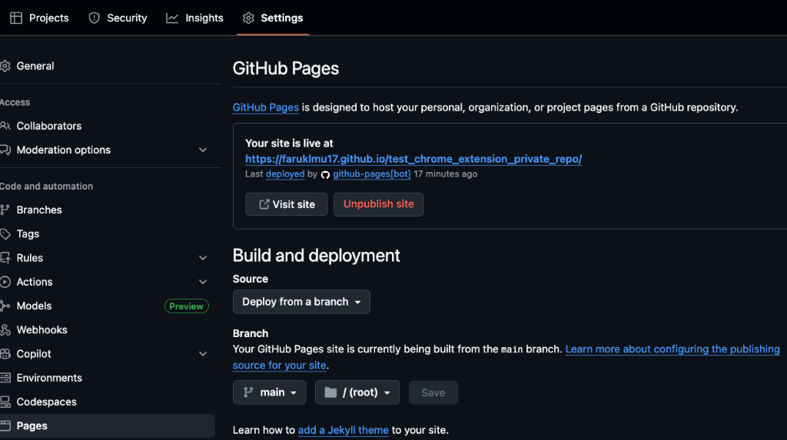

The Playwright Test Results Badge: Monitor Your CI/CD Directly from Chrome
 By Faruk Hasan
By Faruk Hasan
Overview
As a developer or QA engineer, how much time do you lose switching between your IDE and your CI/CD dashboard? The Playwright Test Results Badge is a lightweight Chrome extension designed to eliminate that friction. Instead of digging through 100MB logs, you get an instant visual summary of your test status directly in your browser toolbar. New in v1.3: Full support for private repositories via GitHub Pages.
What the Extension Does
Live Toolbar Badge
The badge stays visible at all times, providing a quick health check of your project:
Detailed Popup View
Click the extension to see a comprehensive breakdown:
- Total number of tests executed
- Verified Passed tests
- Failed test counts
- Last updated timestamp and Manual Refresh button
Quick Setup Guide (6 Steps)
Follow these steps to integrate the badge with your Playwright project today.
Step 1: Install Playwright
If you are starting a new project, run: npm init playwright@latest
- Choose TypeScript for the best experience.
- Choose true for "Add a GitHub Actions workflow".
This will create example tests and a default .yml file that you will replace in Step
4.
Step 2: Create the Summary Reporter
Create summary-reporter.js in your project root. This converts heavy reports into a
lightweight 1KB JSON.
const fs = require('fs');
class SummaryReporter {
onBegin(config, suite) {
this.rootSuite = suite;
}
onEnd(result) {
const summary = {
schemaVersion: 1,
passed: 0,
failed: 0,
flaky: 0,
total: 0,
startTime: new Date().toISOString(),
isSummary: true
};
if (this.rootSuite) {
for (const test of this.rootSuite.allTests()) {
const status = test.outcome();
if (status === 'expected') summary.passed++;
if (status === 'unexpected') summary.failed++;
if (status === 'flaky') summary.flaky++;
}
}
summary.total = summary.passed + summary.failed + summary.flaky;
fs.writeFileSync('test-summary.json', JSON.stringify(summary, null, 2));
console.log('✅ Test summary created: test-summary.json');
}
}
module.exports = SummaryReporter;Step 3: Configure Playwright
Update your playwright.config.ts to include your new custom reporter.
// ... other imports
reporters: [
['./summary-reporter.js'], // Add this line
['html'], // Keep your existing reporters
['list']
],Step 4: Create GitHub Actions Workflow
Automate the test run and summary update. Ensure contents: write permission is
enabled.
name: Playwright Tests
on: [push, pull_request]
permissions:
contents: write
jobs:
test:
runs-on: ubuntu-latest
steps:
- uses: actions/checkout@v4
- uses: actions/setup-node@v4
- name: Run tests
run: npx playwright test
- name: Update test results
if: always()
run: |
git config user.name "Actions Bot"
git config user.email "actions@github.com"
git add test-summary.json
git diff --staged --quiet || git commit -m "chore: update results [skip ci]"
git pushStep 5: Initialize Your Summary
Run your tests locally one time (npx playwright test) to create the
test-summary.json file, then commit and push it to your repository.
Tip: You can use the example tests that come with Playwright to verify the
badge immediately!
Step 6: Connect & Test
Copy the "Raw" URL of your test-summary.json and paste it into the extension
settings.
Monitoring Private Repositories
By design, this extension does not request your GitHub Personal Access Tokens. This keeps your account secure but means it cannot directly access private repository files.
Step-by-Step Configuration
1. Enable GitHub Pages
Go to your Repository Settings > Pages. Set the source to "Deploy from a branch" and select "main" as shown below.
2. Use the Complete Workflow
Copy and paste this workflow into .github/workflows/playwright.yml. It handles
testing, result commitment, and Pages deployment automatically.
name: Deploy results.json to GitHub Pages
on:
push:
branches: [main]
workflow_dispatch:
permissions:
contents: write
pages: write
id-token: write
jobs:
deploy:
environment:
name: github-pages
url: ${{ steps.deployment.outputs.page_url }}
runs-on: ubuntu-latest
steps:
- name: Checkout
uses: actions/checkout@v4
- name: Install dependencies
run: npm ci
- name: Install Playwright Browsers
run: npx playwright install --with-deps
- name: Run Playwright tests
run: npx playwright test
- name: Commit and push updated results
if: always()
run: |
git config user.name "github-actions[bot]"
git config user.email "github-actions[bot]@users.noreply.github.com"
git add test-summary.json
git commit -m "Update test summary [skip ci]" || echo "No changes"
git push
- name: Prepare Pages artifact (Summary and results)
if: always()
run: |
mkdir -p public
cp test-summary.json public/test-summary.json
cp test-summary.json public/results.json
touch public/.nojekyll
- name: Configure Pages
if: always()
uses: actions/configure-pages@v4
- name: Upload artifact
if: always()
uses: actions/upload-pages-artifact@v3
with:
path: public
- name: Deploy
id: deployment
if: always()
uses: actions/deploy-pages@v43. Initialize Your Summary
Run npx playwright test locally, then commit and push the generated
test-summary.json file to GitHub.
4. Connect & Verify
Once the workflow finishes, your site will be live. Paste your Pages URL (e.g.,
https://username.github.io/repo/results.json) into the extension settings.
Workflow & Best Practices
The extension is designed to work with any CI tool including GitHub Actions, GitLab CI, Jenkins, and CircleCI.
if: always(). This ensures the summary file is updated even when tests fail, which is
exactly when you need the badge most!
Permissions Explained
- storage: To save your configured JSON URL locally.
- alarms: To handle the 1-minute background refresh polling.
- file access (optional): Required only if you're monitoring a
test-summary.jsonon your local machine.
Troubleshooting common issues
Check if test-summary.json
exists and contains "isSummary": true. Verify the URL is public or reachable.
Confirm your GitHub Workflow has
contents: write permissions and that [skip ci] is used to avoid
infinite loops.
Boost Your Testing Productivity
Get the extension for free and keep your test health visible at all times.